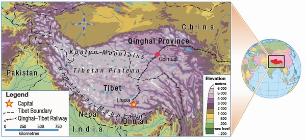

Big Idea: The relationship between nation, nationalism and identity. History, language, religion/spirituality, culture and geography impact nationalism.
The example of Tibet demonstrates how history, language, religion/spirituality, culture or geography impacts nationalism. Review this page before completing the upcoming assignments.
History of Tibet
 Tibet
Tibet was first united in the 7th century of the Common Era. Over the centuries Tibet has been entangled in the numerous conquests and power struggles of many different ruling regimes including the Mongol, Manchu and Qing empires. Although frequently subject to foreign rule, Tibet was always a cultural entity distinct from the dynasties and empires of which it was a part. Much of the conflict between modern day China and Tibet is a result of the fact that the People’s Republic of China claims that Tibet has long been under Chinese control. However, many Tibetans feel that Tibet has historically been a separate nation, only under direct Chinese authority since Chinese forces, under communist leader Mao Zedong, invaded in 1950. Scholars continue to debate this issue.
The historical separateness of Tibet has deeply affected Tibetan nationalism. This separateness is evident in the fact that there are mythical creation stories unique to Tibet alone. The fact that Tibetans have withstood, to some degree, near continuous outside influence throughout the centuries is a source of nationalistic pride to Tibetans, particularly in modern times, where Chinese rule is seen as unjust occupation.
Language of Tibet
Currently, Tibet’s official language is Chinese. However, the Tibetan people speak a group of languages, unique to the area, consisting of many different dialects collectively referred to as Tibetan. In Tibet, primary education is generally taught in Tibetan, and secondary education is taught in Chinese. The Tibetan linguistic uniqueness is one element that brings Tibetans together allowing not only for ease of communication within the group, but a language for religion, literature and other forms of culture.
Religion/Spirituality
 Tibetan Buddhism is a form of Buddhism that considers the Dalai Lama its spiritual leader. The word “lama,” roughly translated, means teacher and the Dalai Lama is the highest of all lamas, an incarnation of a Buddhist master. Tibetan Buddhism is a highly ritualized form of Buddhism and is known for its elaborate, colourful ceremonies, and distinctive sounds and music, most notably, the chanting of the Tibetan Buddhist monks.
Tibetan Buddhism is a form of Buddhism that considers the Dalai Lama its spiritual leader. The word “lama,” roughly translated, means teacher and the Dalai Lama is the highest of all lamas, an incarnation of a Buddhist master. Tibetan Buddhism is a highly ritualized form of Buddhism and is known for its elaborate, colourful ceremonies, and distinctive sounds and music, most notably, the chanting of the Tibetan Buddhist monks.
Caption: Tibetan Monks in Song Zan Lin Si temple (photo credit: Chris Webster)
There is also a small but notable Islamic community in Tibet and traditions from the pre-Buddhist indigenous shamanistic religion known as Bön, still influence religious practices today.
The common religion of the Tibetan people is a large part of Tibetan nationalism. This is because the spiritual leader of Tibetan Buddhism, the Dalai Lama, is also the political leader of the Tibetan people. Forced to flee to India in 1951, the Dalai Lama is the head of the Tibetan Government in Exile situated in Dharamsala, India. A popular and charismatic figure, the Dalai Lama is the voice of Tibetan nationalism, bringing attention to the plight of Tibetans.
Culture of Tibet
 Many aspects of Tibetan culture are unique to the nation. Rice, a common staple food in surrounding areas, does not grow in Tibet due to the high altitude. Instead, the staple food eaten by Tibetans is barley, known locally as Tsampa. The national drink is salted butter tea.
Many aspects of Tibetan culture are unique to the nation. Rice, a common staple food in surrounding areas, does not grow in Tibet due to the high altitude. Instead, the staple food eaten by Tibetans is barley, known locally as Tsampa. The national drink is salted butter tea.
Tibetan people dress modestly and conservatively, wearing long sleeves even during warm summers. One item of clothing with ritual significance is the Khata, a white silk scarf, given at various occasions as a symbol of good will.
Many other aspects of Tibetan culture are unique, such as music, architecture, poetry, art, festivals and holidays.
Caption: Tibetan woman in Shangri-La (photo credit: Chris Webster)
Many in Tibet fear that Tibetan culture is rapidly disappearing due to the influx of Han Chinese immigrants. In fact, the Tibetan government in exile reports that Tibetans are now a minority in their homeland and also make the claim that Chinese immigration into the region is a deliberate strategy being undertaken by the Chinese government to dilute Tibetan culture.
Geography of Tibet
 Tibet is a high altitude, mountainous region found in the centre of Asia. Much of the Himalayan Mountain Range, including the world’s highest mountain, Mount Everest, is located in Tibet. The Tibet Autonomous Region, the area that the Chinese government considers to be Tibet, is only a small part of the territory that Tibetans consider to be Tibet.
Tibet is a high altitude, mountainous region found in the centre of Asia. Much of the Himalayan Mountain Range, including the world’s highest mountain, Mount Everest, is located in Tibet. The Tibet Autonomous Region, the area that the Chinese government considers to be Tibet, is only a small part of the territory that Tibetans consider to be Tibet.
Caption: Mount Everest from the Tibet side. (photo credit: Paal A. Martinussen)

Geography strongly affects Tibetan nationalism. Many Tibetans do not accept the division of allegedly Tibetan territory. In addition, geography affects Tibetan nationalism because of the effect that Tibet’s location in the world has on the Tibetan way of life. Living at such a high altitude, in relatively harsh conditions and physical isolation of the plateau from the surrounding countries has resulted in a unique mountain culture that binds Tibetans together.
It should also be noted that many Tibetans are scattered around the world, and many can be found in India. Despite their scattered locations, the Tibetan nation is bound by many other nationalistic factors.
Tibet: Nation within a nation-state
Opposing viewpoints on Tibet independence:
See the pro and con debates about Tibet independence on the Debatepedia website. Open this page and scroll down to read the following debates:
First start with #3, Summary of the Arguments.
Then ...
#4 General history: Are Tibet's general historical claims to independence justified? (What are China's claims to Tibet?)
#15 Distinct identity: Does Tibet have a distinct national identity?
#20 Religious freedoms: Would Tibetan independence improve the religious freedoms?
#10 1911-1949: Was Tibet independent during this period?
#11 1949, invasion/liberation: Did China acquire Tibet by illegitimate means in 1949?
#14 Diplomatic recognition: Has Tibet been recognized diplomatically by other countries?


.jpg)